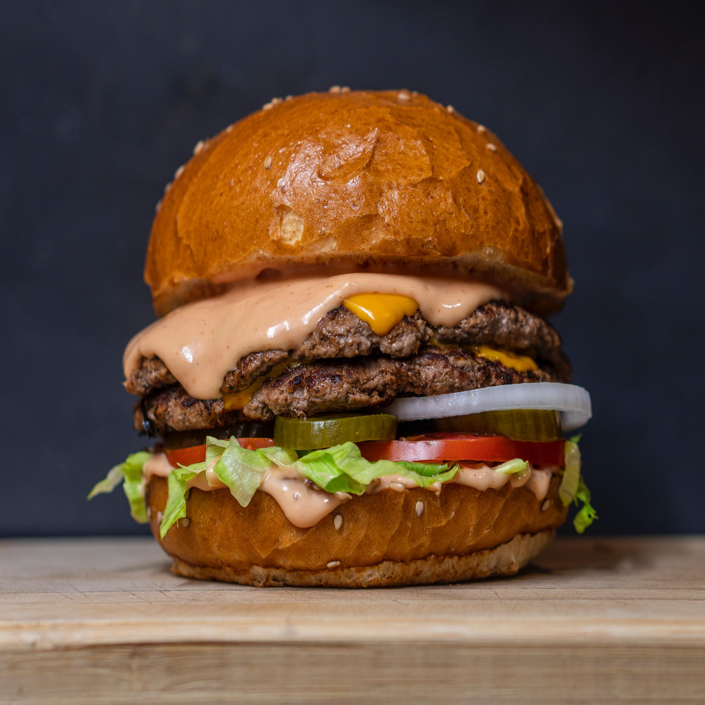
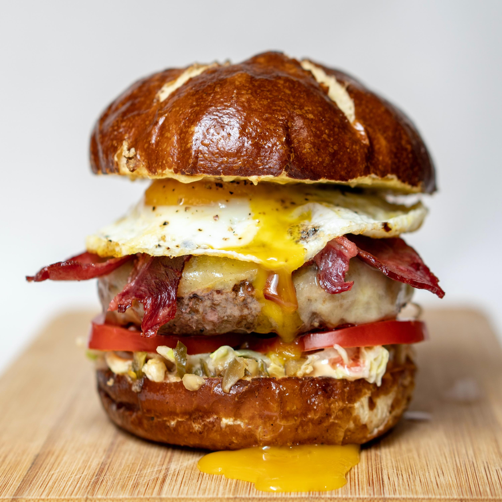
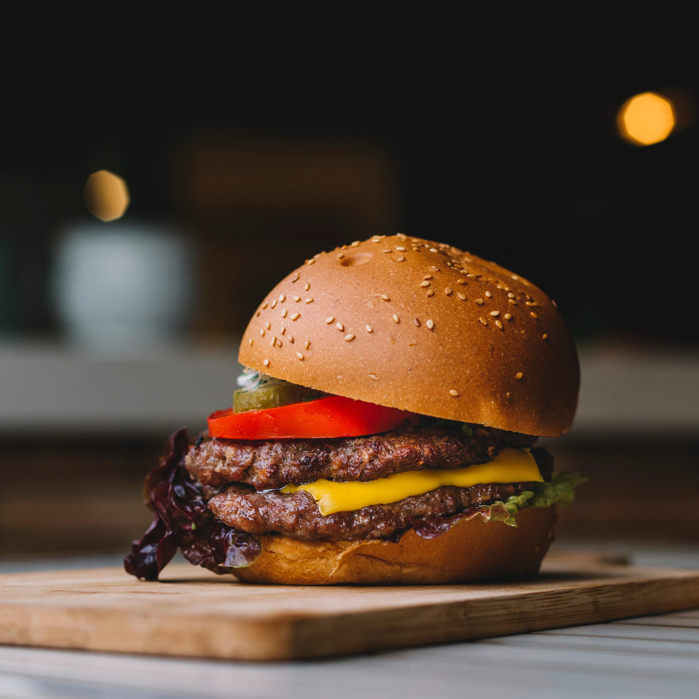

Beef Burger
Heat the olive oil in a frying pan, add the onion and cook for 5 minutes until softened and starting to turn golden. Set aside.
In a bowl, combine the beef mince with the herbs and the egg. Season, add the onions and mix well. Using your hands, shape into 4 patties.
Cook the burgers on a preheated barbecue or griddle for 5-6 minutes on each side. While the second side is cooking, lay a slice of cheese on top to melt slightly (if using).
Meanwhile, lightly toast the cut-sides of the buns on the barbecue. Fill with the lettuce, burgers and tomato slices. Serve with ketchup, if you like.

Mushroom Burger
Place the mushroom caps, smooth side up, in a shallow dish. In a small bowl, whisk together vinegar, oil, basil, oregano, garlic, salt, and pepper. Pour over the mushrooms. Let stand at room temperature for 15 minutes or so, turning twice. Preheat grill for medium-high heat. Brush grate with oil. Place mushrooms on the grill, reserving marinade for basting. Grill for 5 to 8 minutes on each side, or until tender. Brush with marinade frequently. Top with cheese during the last 2 minutes of grilling.

Veggie Burger
Roast the vegetables until caramelized and extra moisture has evaporated. We chop the veggies into tiny bits first and then roast them. Roast the beans for about 15 minutes so they split open and dry out a bit, A food processor helps to chop vegetables so they look like coarse crumbs. This makes up most of the burger, which means you see the little bits of vegetable throughout the patty